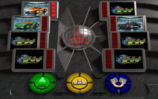
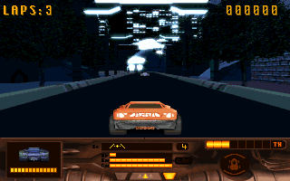

名稱：瘋狂大飆車1／百萬賽事1／瘋狂飛飆車 (MegaRace，中文／英文版) 簡介：Cryo 1993年出品的賽車遊戲，由Software Toolworks代理發行 [待補]。   保護：光碟 備註：中文版只有語音是中文，所有文字內容仍為英文（包括字幕）。 備註：安裝時建議Manual或Custom，以選用自己想要的功能。 備註：進入遊戲後，記得到正下方的Options裡設定各功能對應的鍵盤按鍵。

